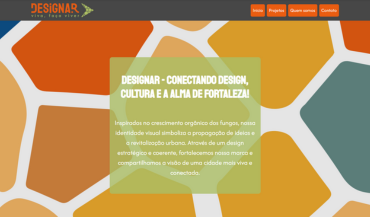
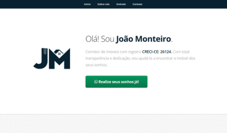
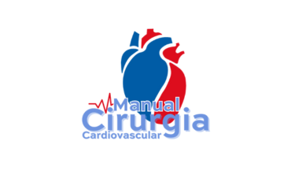
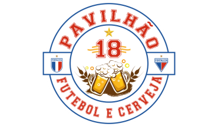

Sou Bacharel em Design e estou cursando pós-graduação em Engenharia de Software. Minha paixão é criar soluções inovadoras com UI/UX Design, sempre buscando a melhor experiência para os usuários. Como pessoa com deficiência física, encaro desafios como oportunidades de aprendizado e crescimento. Minha jornada é marcada por dedicação, criatividade e uma busca constante por excelência na resolução de problemas.
Trabalhos recentes

Designar - Viva, Faça Viver
Desenvolvi o site oficial do projeto Designar - Viva, Faça Viver, uma iniciativa voltada para a revitalização urbana por meio do design. O site apresenta a identidade visual do projeto, destacando suas ações, como o podcast Dexocast e o aplicativo Designar. O desenvolvimento focou em uma experiência fluida e responsiva, garantindo acessibilidade e comunicação eficiente da proposta.

JM - Corretor de Imóveis
Desenvolvi o site para um corretor de imóveis, criando uma plataforma intuitiva e responsiva para apresentação de imóveis, serviços e contato direto com clientes. O design foi pensado para oferecer navegação fluida e facilitar a comunicação entre o corretor e seus clientes.

Manual Multimídia de Procedimentos Cirúrgicos Cardiovasculares
Desenvolvi a identidade visual para o canal do Vimeo "Manual Multimídia de Procedimentos Cirúrgicos Cardiovasculares", uma iniciativa do Instituto Dante Pazzanese de Cardiologia. O canal tem como objetivo disponibilizar um manual multimídia com os principais procedimentos de cirurgia cardiovascular realizados no instituto, servindo como uma ferramenta de ensino para residentes em Cirurgia Cardiovascular. A logo criada reflete a precisão e a seriedade da prática cirúrgica, alinhando-se à missão educativa do canal.

Pavilhão 18 - Torcida do time Fortaleza Esporte Clube
Desenvolvi a identidade visual da torcida organizada Pavilhão 18, um grupo de amigos apaixonados pelo Fortaleza Esporte Clube. A logo foi criada para representar três pilares essenciais: amizade, boemia e amor pelo time, capturando o espírito vibrante e a união dos torcedores. Além da logo, também criei o design exclusivo da camisa da torcida, trazendo elementos que simbolizam a paixão pelo Leão do Pici e a energia única das arquibancadas. A identidade visual reflete a essência do grupo, combinando tradição e modernidade para fortalecer ainda mais a presença da Pavilhão 18 dentro e fora dos estádios.
{kind=link}
{kind=link}
{kind=link}
{kind=link}